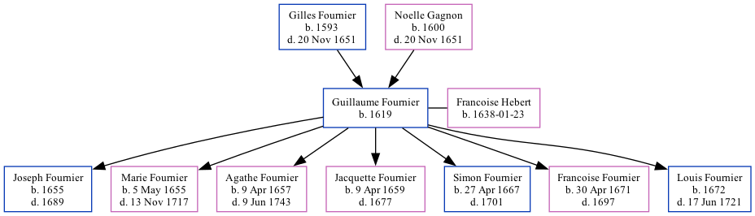

Guillaume Fournier 1619 -
[ Home ] | [ Calendar ] | [ Surnames Index ] | [ Family History ]The child of Gilles Fournier and Noelle Gagnon, Guillaume Fournier, the 9 times great-grandfather of Michele Copp (née Phillips), was born in Coulmer, Argentan, Normandie, France in 16191 and married Francoise Hebert (with whom he had 7 children: Joseph, Marie, Agathe, Jacquette, Simon, Francoise and Louis) in Quebec, Quebec, Canada on 1651-11-20.
He died in Montmagny, Quebec, Canada.
Parents
- Gilles was born in 1593
- Noelle was born in 1600
Children
- Joseph was born in 1655
- Marie was born on May 5, 1655
- Agathe was born on Apr 9, 1657
- Jacquette was born on Apr 9, 1659
- Simon was born on Apr 27, 1667
- Francoise was born on Apr 30, 1671
- Louis was born in 1672
Citations
- U.S. and International Marriage Records, 1560-1900 Online publication - Provo, UT, USA: The Generations Network, Inc., 2004.Original data - This unique collection of records was extracted from a variety of sources including family group sheets and electronic databases. Originally, the information was deriv
Family Tree
Generated by ged2site. Last updated on Sep 9, 2024